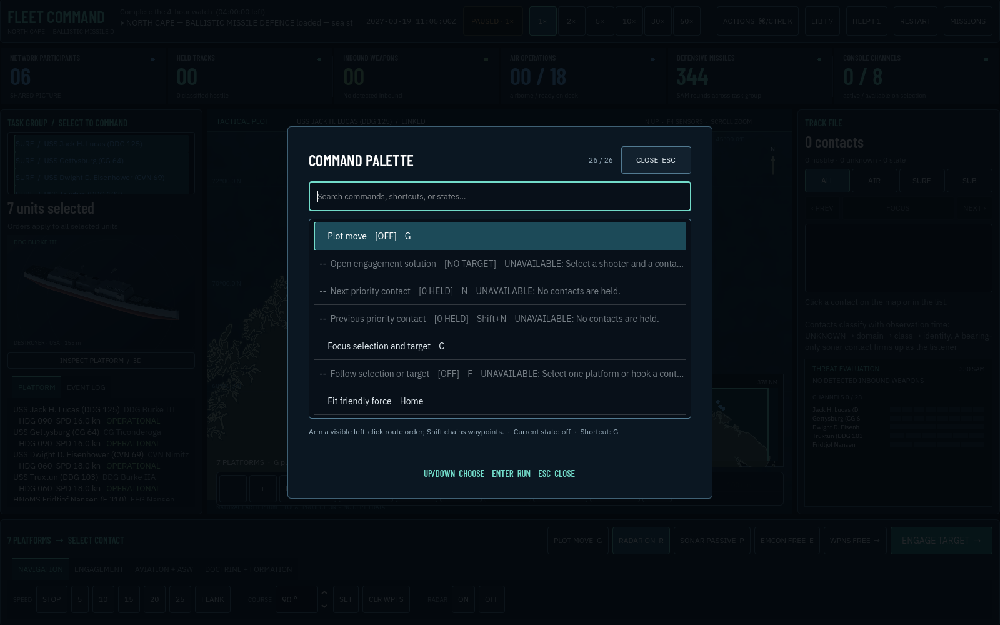
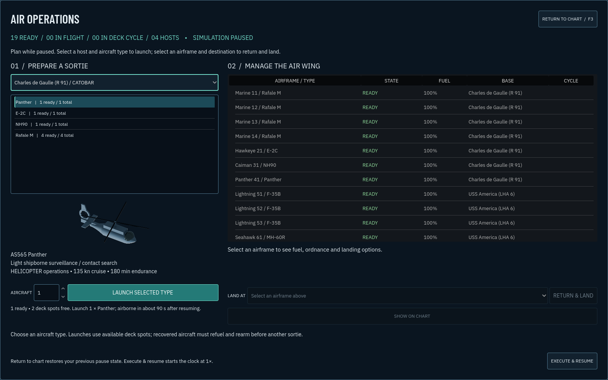

See the picture.
Command the problem.
Lead ships, submarines, aircraft, and layered defences from an Aegis-inspired command centre. Plot deliberate routes, recover the map at a glance, cycle the most important contacts, and move from shooter to target to a legal firing solution.
Desktop keyboard + mouse/trackpad · WebGL 2 · original Godot simulation and procedural sound
Public system families; estimated performance and fictional scenarios.

Choose your air wing
Select the carrier or airfield, aircraft type and sortie size. See each airframe’s readiness, fuel and deck cycle in the new Air Operations board.
Bring them home
Choose a compatible carrier or friendly runway. Aircraft fly a visible approach, land, refuel and rearm before their next sortie. Divert to another base when needed.
Expand the force
18 new ships, submarines and aircraft, 12 weapon families and original 3D models. Practise shipboard and shore recovery in the new Carrier Qualification exercise.

Your first watch
Choose Carrier Qualification / Air Operations, read the briefing, then Take Command. Open F3, select a host and aircraft type, and launch. Choose Execute & Resume to fly. Once airborne, reopen the board, select an airframe and landing destination, and choose Return & Land.
F3 Air Operations · ⌘/Ctrl K Actions · G Plot Move · N Next contact · C Focus · F Follow · Home Fit force · Space Pause · 1–6 Time · R Radar · E EMCON · P Sonar · F1 Help
Build an uncertain picture
Radar horizons, sonar bearings, electronic support, private observer histories, classification, stale tracks, and target-motion analysis.
Manage the shield
Layered missile defence, finite magazines, decoys, fire-control channels, ballistic threats, and a live evaluation board.
Operate the force
Formations, emissions control, aircraft launch and recovery, fuel, tanker dependence, sonobuoys, damage control, and opposing AI.
Navigate real geography
Eleven missions use generalized Natural Earth coastlines and bathymetry with islands, straits, shelves, basins, geographic grids, land masking, and collision-aware movement.
Inspect every system
Orbit original illustrative 3D models for the fleet and its ordnance, with linked sensor fits and loadouts.
Build your own watch
The in-game editor places platforms, patrols, terrain, objectives, protected units, and environmental conditions, then exports shareable JSON.